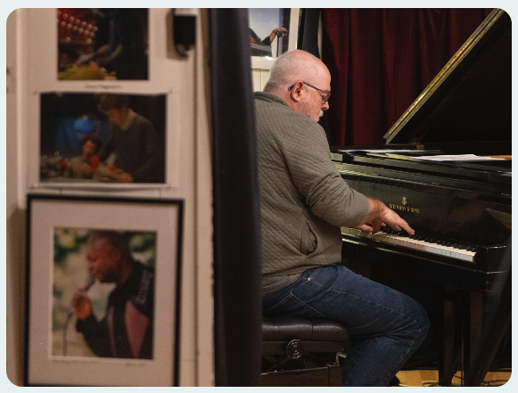

Check out my YouTube music channel and its associated web site.

Bands
- Westwind Swing Band (Twin Cities). Big Band specializing in the music of the 1902s, 30s and 40s.
- North Star Jazz Workshops (Twin Cities). I participate as a student in these small combo jazz workshops.
- Jazz on the Prairie (Twin Cities). Here's a video of a gig we played at the Minnesota Landscape Arboretum. There are two pianists in this video. I'm the one not wearing a hat.
- Mark Pedigo Trio (St. Louis). I briefly (about a year) led a piano trio that played corporate events and restaraunts. We stopped playing out when the bass player went out East to get his Masters. He's since got his PhD and is a prof at ASU. Go Nick!
- Dixie Rhythm Kings (St. Louis). I played in this band for about 10 years. It's a traditional jazz band (i.e., NOLA-style) that plays for assisted living facilities.
- St. Louis Big Band (St. Louis). I believe there's another band of this name now. This one played lots and lots of weddings and assorted other gigs. I quit the band shortly before someone thought it was a good idea to bring in circus folks to perform during the shows (yes, really). I saw a pic somewhere of a trapeze artist swinging above the sax section. The players had a hard time keeping their eyes on the music.
- Many college and high school jazz bands, including combos at the University of Missouri St. Louis when Jim Widner led the jazz offerings.